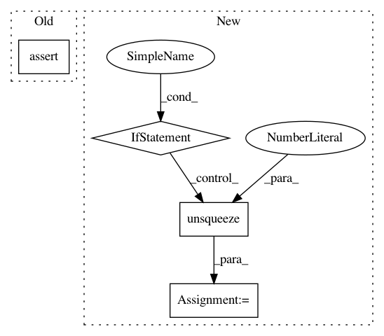

60a342edc8b501802135df44869353cc8604d838,gpytorch/kernels/kernel.py,Kernel,__call__,#Kernel#Any#Any#,8
Before Change
x1 = x1.view(-1, 1)
if x2.data.ndimension() == 1:
x2 = x2.view(-1, 1)
assert(x1.size(1) == x2.size(1))
return super(Kernel, self).__call__(x1, x2, **params)
After Change
// Do everything in batch mode by default
is_batch = x1.ndimension() == 3
if not is_batch:
x1 = x1.unsqueeze(0)
x2 = x2.unsqueeze(0)
res = super(Kernel, self).__call__(x1, x2, **params)
if not is_batch:
res = res[0]
return res
In pattern: SUPERPATTERN
Frequency: 4
Non-data size: 4
Instances
Project Name: cornellius-gp/gpytorch
Commit Name: 60a342edc8b501802135df44869353cc8604d838
Time: 2018-01-11
Author: gpleiss@gmail.com
File Name: gpytorch/kernels/kernel.py
Class Name: Kernel
Method Name: __call__
Project Name: cornellius-gp/gpytorch
Commit Name: 91b0d220c8e816766fd4565e1d2f5115d3afbefe
Time: 2018-10-12
Author: gpleiss@gmail.com
File Name: test/functions/test_inv_quad_log_det.py
Class Name: TestInvQuadLogDetBatch
Method Name: test_log_det_only
Project Name: cornellius-gp/gpytorch
Commit Name: 91b0d220c8e816766fd4565e1d2f5115d3afbefe
Time: 2018-10-12
Author: gpleiss@gmail.com
File Name: test/functions/test_inv_quad_log_det.py
Class Name: TestInvQuadLogDetBatch
Method Name: test_inv_quad_log_det_many_vectors
Project Name: zhanghang1989/PyTorch-Encoding
Commit Name: 1633f31066b98cb5e8c8c3a13436b6bdf32afea3
Time: 2017-05-21
Author: zhang.hang@rutgers.edu
File Name: encoding/__init__.py
Class Name: Encoding
Method Name: forward